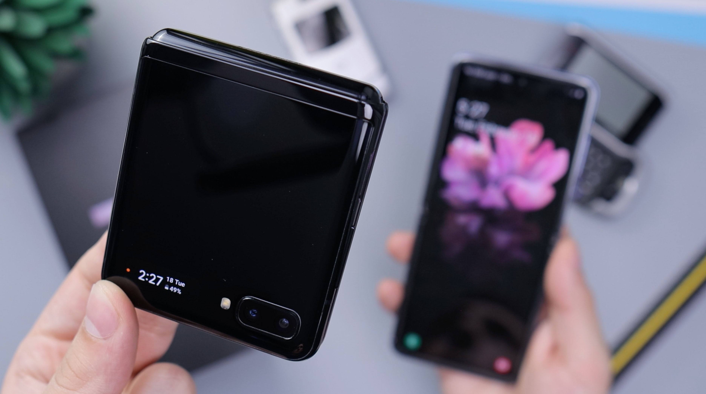

Samsung Galaxy devices use the Android operating system produced by Google, usually with a custom user interface called One UI (with previous versions being known as Samsung Experience and TouchWiz). However, the Galaxy TabPro S is the first Galaxy-branded Windows 10 device that was announced in CES 2016. The Galaxy Watch is the first Galaxy-branded smartwatch since the release of later iterations of the Gear smartwatch from 2014 to 2017. In April 2019, the company announced that it would postpone the release of its folding smartphone, the Samsung Galaxy Fold, days after several early reviewers said the screens on their devices had broken;[3] the Fold was rereleased in September 2019.[4]
